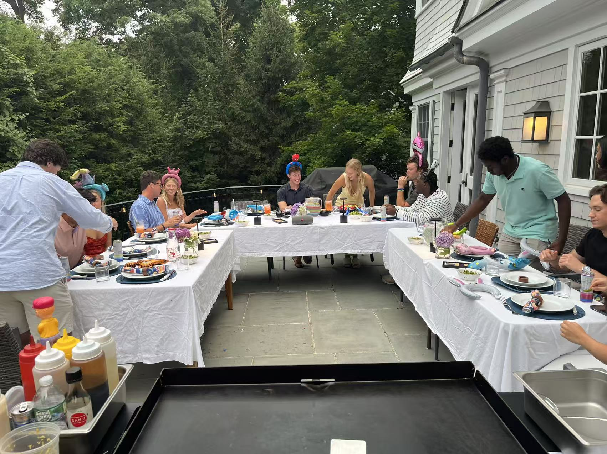

Private outdoor hibachi catering in Stamford, CT for backyard parties, birthdays, corporate events, family gatherings, and luxury home experiences. A1 Hibachi Party brings a live chef, fire show, and full hibachi setup directly to your home.
A1 Hibachi Party offers Stamford hibachi catering, private hibachi chef Stamford CT, outdoor hibachi catering near me, and backyard hibachi party Stamford. If you are searching for a hibachi chef near Stamford, a hibachi party at home, or a private hibachi catering service, we bring a full restaurant-style hibachi experience directly to your location.
Stamford Hibachi Experience
Stamford is one of the best areas for private hibachi catering because of its mix of modern homes, suburban backyards, and outdoor-friendly event spaces. A1 Hibachi Party brings everything — chef, grill, fresh ingredients, and live cooking — directly to your home.
This page is designed for customers searching for Stamford hibachi catering, private hibachi chef Stamford Connecticut, outdoor hibachi party Stamford CT, and hibachi birthday party Stamford. The goal is not just food — it is a full live experience.

Stamford Event Ideas
Stamford offers a perfect mix of suburban homes and modern living spaces, making it ideal for outdoor hibachi experiences.
Transform your Stamford backyard into a hibachi restaurant with a live chef, fire show, and full dining experience.
One of the most popular uses — a hibachi chef makes birthdays interactive, fun, and memorable.
Great for team dinners, company events, and private group experiences without restaurant limitations.
Perfect for bringing family together around live cooking, fresh food, and shared experience.
Celebrate major milestones with something more exciting than traditional catering.
Ideal for relaxed but premium weekend events with friends and guests.
A1 Hibachi Party provides Stamford outdoor hibachi catering, private hibachi chef Stamford CT, hibachi catering near me Stamford, backyard hibachi party Stamford Connecticut, and hibachi birthday party Stamford. We specialize in bringing a full hibachi experience including fresh proteins, fried rice, vegetables, live cooking, fire show entertainment, and private chef interaction directly to your home. Whether you are searching for hibachi at home Stamford, outdoor hibachi catering near Stamford, or private chef hibachi experience CT, A1 Hibachi Party is one of the top-rated choices in the NYC metro and Connecticut area.
Book Stamford Now
Submit your event details, including date, guest count, and location. We will confirm availability, travel, setup requirements, and final pricing.